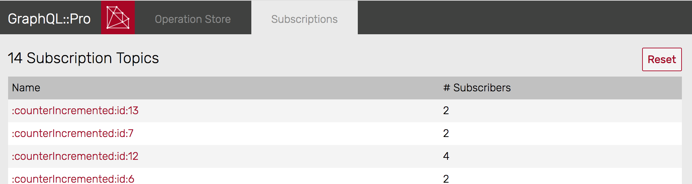
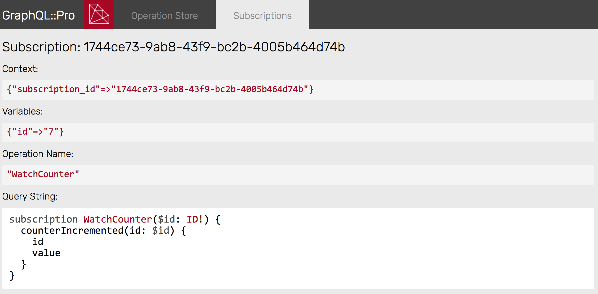

Ably Implementation
GraphQL Pro includes a subscription system based on Redis and Ably which works with any Ruby web framework.
After creating an app on Ably, you can hook it up to your GraphQL schema.
How it Works
This subscription implementation uses a hybrid approach:
-
Your app takes
GraphQLqueries an runs them -
Redis stores subscription data for later updates
-
Ably sends updates to subscribed clients
So, the lifecycle goes like this:
-
A
subscriptionquery is sent by HTTP Post to your server (just like aqueryormutation) -
The response contains an Ably channel ID (as an HTTP header) which the client may subscribe to
-
The client opens that Ably channel
-
When the server triggers updates, they’re delivered over the Ably channel
-
When the client unsubscribes, the server receives a webhook and responds by removing its subscription data
Here’s another look:
1. Subscription is created in your app
HTTP POST
.----------> write to Redis
📱 ⚙️ -----> 💾
<---------'
X-Subscription-ID: 1234
2. Client opens a connection to Ably
websocket
📱 <---------> ☁️
3. The app sends updates via Ably
⚙️ ---------> ☁️ ------> 📱
POST update
(via gem) (via websocket)
4. When the client unsubscribes, Ably notifies the app
webhook
⚙️ <-------- ☁️ (disconnect) 📱
By using this configuration, you can use GraphQL subscriptions without hosting a push server yourself!
Ably setup
Add ably-rest to your Gemfile:
gem 'ably-rest'
and bundle install.
Database setup
Subscriptions require a persistent Redis database, configured with:
maxmemory-policy noeviction # optional, more durable persistence: appendonly yes
Otherwise, Redis will drop data that doesn’t fit in memory (read more in “Redis persistence”).
If you’re already using Redis in your application, see “Storing Data in Redis” for options to isolate data and tune your configuration.
Schema configuration
Add redis to your Gemfile:
gem 'redis'
and bundle install. Then create a Redis instance:
# for example, in an initializer: $graphql_subscriptions_redis = Redis.new # default connection
Then, that Redis client is passed to the Subscription configuration:
class MySchema < GraphQL::Schema use GraphQL::Pro::AblySubscriptions, redis: $graphql_subscriptions_redis, ably: Ably::Rest.new(key: ABLY_API_KEY) end
That connection will be used for managing subscription state. All writes to Redis are prefixed with graphql:sub:.
There are also two configurations for managing persistence:
-
stale_ttl_s:expires subscription data after the given number of seconds without any update. Afterstale_ttl_shas passed, the data will expire from Redis. Each time a subscription receives an update, its TTL is refreshed. (Generally, this isn’t required because the backend is built to clean itself up. But, if you find that Redis is collecting stale queries, you can set them to expire after some very long time as a safeguard.) -
cleanup_delay_s:(default:5) prevents deleting a subscription during those first seconds after it’s created. Usually, a longer delay isn’t necessary, but if you observe latency between the subscription’s initial response and the client’s subscription to the delivery channel, you can set this configuration to account for it.
Connection Pool
For better performance reading and writing to Redis, you can pass a connection_pool: instead of redis:, using the connection_pool gem:
use GraphQL::Pro::AblySubscriptions, connection_pool: ConnectionPool.new(size: 5, timeout: 5) { Redis.new }, ably: Ably::Rest.new(key: ABLY_API_KEY)
Broadcasts
If you set up Broadcasts, then you can update many clients over a single Ably channel.
Broadcast channels have stable, predictable IDs. To prevent unauthorized clients from “listening in,” use token authorization for transport. Broadcasts channels use the namespace gqlbdcst:, so you can provide capabilities to receive them using "gqlbdcst:*" => [ ... ] in your authorization code. (If you’re using encryption, the prefix will be ablyencr-gqlbdcst: instead.)
Execution configuration
During execution, GraphQL will assign a subscription_id to the context hash. The client will use that ID to listen for updates, so you must return the subscription_id in the response headers.
Return result.context[:subscription_id] as the X-Subscription-ID header. For example:
result = MySchema.execute(...) # For subscriptions, return the subscription_id as a header if result.subscription? response.headers["X-Subscription-ID"] = result.context[:subscription_id] end render json: result
This way, the client can use that ID as a Ably channel.
For CORS requests, you need a special header so that clients can read the custom header:
if result.subscription? response.headers["X-Subscription-ID"] = result.context[:subscription_id] # Required for CORS requests: response.headers["Access-Control-Expose-Headers"] = "X-Subscription-ID" end
Read more here: “Using CORS”.
Webhook configuration
Your server needs to receive webhooks from Ably when clients disconnect. This keeps your local subscription database in sync with Ably.
Server
Note: if you’re setting up in a development environment you should follow the Developing with webhooks section first
Mount the Rack app for handling webhooks from Ably. For example, on Rails:
# config/routes.rb # Include GraphQL::Pro's routing extensions: using GraphQL::Pro::Routes Rails.application.routes.draw do # ... # Handle webhooks for subscriptions: mount MySchema.ably_webhooks_client, at: "/ably_webhooks" end
Alternatively, you can configure the routes to load your schema lazily, during the first request:
# Provide the fully-qualified class name of your schema: lazy_routes = GraphQL::Pro::Routes::Lazy.new("MySchema") mount lazy_routes.ably_webhooks_client, at: "/ably_webhooks"
Ably
-
Go to the Ably dashboard
-
Click on your application
-
Select the “Integrations” tab
-
Click on the “+ New Integration Rule” button
-
Click on the “Choose” button for “Webhook”
-
Click on the “Choose” button for “Webhook” (again)
-
Enter your URL (including the webhooks path from above) in the URL field.
-
Select “Batch request” for “Request Mode”
-
Under “Source”, select “Presence”
-
Under “Sign with key”, select the API Key prefix that matches the prefix of the
ABLY_API_KEYyou provided -
Click “Create”
Authorization
You can use Ably’s token authentication by implementing an endpoint in your app, for example:
class AblyController < ActionController::Base def auth render status: 201, json: ably_rest_client.auth.create_token_request( capability: { '*' => ['presence', 'subscribe'] }, client_id: 'graphql-subscriber', ) end end
Ably’s tutorial also demonstrates some of the setup for this.
Encryption
You can use Ably’s end-to-end encryption with GraphQL subscriptions. To enable it, add cipher_base: to your setup:
use GraphQL::Pro::AblySubscriptions, redis: $graphql_subscriptions_redis, ably: Ably::Rest.new(key: ABLY_API_KEY), # Add `cipher_base:` to enable end-to-end encryption cipher_base: "ff16381ae2f2b6c6de6ff696226009f3"
(Any random string will do, eg ruby -e "require 'securerandom'; puts SecureRandom.hex".)
Also, return a header to client so that it can decrypt subscription updates. The key is put in context[:ably_cipher_base64], and graphql-ruby-client expects to find it in the X-Subscription-Key header:
result = MySchema.execute(...) # For subscriptions, return the subscription_id as a header if result.subscription? response.headers["X-Subscription-ID"] = result.context[:subscription_id] # Also return the encryption key so that clients # can decode subscription updates response.headers["X-Subscription-Key"] = result.context[:ably_cipher_base64] end
(Also, if you’re using CORS requests, update Access-Control-Expose-Headers to include X-Subscription-Key)
With this setup,
-
GraphQL::Pro::AblySubscriptionswill generate per-subscription keys (usingcipher_baseand the subscription ID) and use them to encrypt Ably payloads -
Those keys will be returned to clients in
X-Subscription-Key -
Clients will use those keys to decrypt incoming messages
Backwards compatibility: GraphQL::Pro::AblySubscriptions will only encrypt payloads whose query.context[:ably_cipher_base64] is present. Any subscriptions created before cipher_base: was added to the setup will not be encrypted. (There was no key to encrypt them, and clients don’t have a key to decrypt them!)
Serializing Context
Since subscription state is stored in the database, then reloaded for pushing updates, you have to serialize and reload your query context.
By default, this is done with GraphQL::Subscriptions::Serialize‘s dump and load methods, but you can provide custom implementations as well. To customize the serialization logic, create a subclass of GraphQL::Pro::AblySubscriptions and override #dump_context(ctx) and #load_context(ctx_string):
class CustomSubscriptions < GraphQL::Pro::AblySubscriptions def dump_context(ctx) context_hash = ctx.to_h # somehow convert this hash to a string, return the string end def load_context(ctx_string) # Given the string from the DB, create a new hash # to use as `context:` end end
Then, use your custom subscriptions class instead of the built-in one for your schema:
class MySchema < GraphQL::Schema # Use custom subscriptions instead of GraphQL::Pro::AblySubscriptions # to get custom serialization logic use CustomSubscriptions, ... end
That gives you fine-grained control of context reloading.
Dashboard
You can monitor subscription state in the GraphQL-Pro Dashboard:

Subscription Dashboard
Subscription DetailDevelopment Tips
Clear subscription data
At any time, you can reset your subscription database with the “Reset” button in the GraphQL-Pro Dashboard, or in Ruby:
# Wipe all subscription data from the DB: MySchema.subscriptions.clear
Developing with webhooks
To receive webhooks in development, you can use ngrok. It gives you a public URL which you can setup with Ably, then any hooks delivered to that URL will be forwarded to your development environment.
Client configuration
Install the Ably JS client then see docs for: